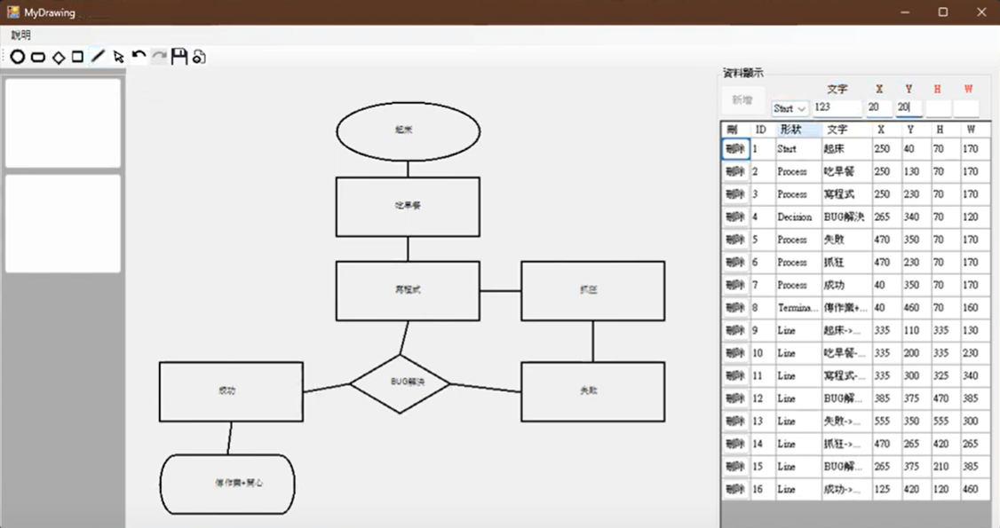
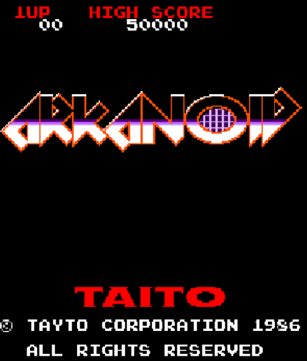

自我介紹
我是蘇李冠穎，目前就讀北科大的大四學生，對程式設計和邏輯思考很有興趣，特別喜歡做遊戲或軟體開發。我學過多種程式語言，包括 C、C++、C#、Python、PHP、Java 和 SQL，也有使用過 Linux、Unity 和 MySQL 的經驗。 我喜歡動手實作，享受寫程式解決問題的過程，未來希望能在軟體或遊戲開發方面繼續學習和成長。
平常的興趣是打電動和思考LeetCode上的問題。
作品集


聯絡方式
- Email: a0917169636a@gmail.com
- Phone: 0909663797
- GitHub: 我的github